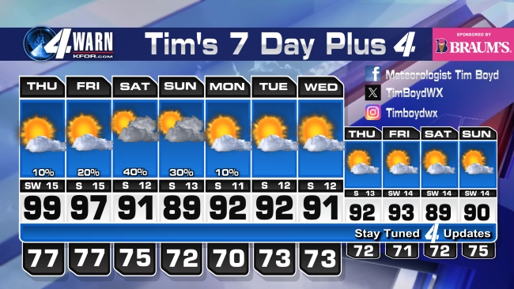

CONCEPT 1 — FRONT PAGE: "EXHIBIT A" BECOMES ONE CONTESTED DAY, WHOLE FIELD
Exhibit A: Saturday, July 11 · every board, one day, one official answer
| Forecaster | Called | Rain | Miss |
|---|
| KFOR 4WARN | 98 | 10% | −1 |
| GFS ● | 97 | 5% | −2 |
| NEWS 9 | 98 | 20% | −1 |
| NWS NORMAN | 101 | 20% | +2 |
| ECMWF ● | 100 | 40% | +1 |
| KOCO 5 | 97 | 15% | −2 |
| FOX 25 | 102 | 30% | +3 |
| THE SKY | 99 | DRY | — |

RECEIPTS: BROADCAST GRAPHICS & PAGES ARCHIVED WED–SAT · SHA256 1A43790C… +6 MORE · ORIGINALS ON FILE, HASHED
The week’s most contested day replaces the raw broadcast art. The archived graphic drops to a provenance footnote — the receipt still exists, it just stops art-directing the page.
CONCEPT 2 — SIDE B HERO: "THE PUNCH CARD" · EVERY STATION × EVERY DAY
The punch card · high-temp miss, called minus actual · circle = exact hit
| Forecaster | MON | TUE | WED | THU | FRI | SAT | SUN | WEEK |
|---|
| KFOR 4WARN | −1 | +2 | 0 | +1 | −1 | −1 | −1 | 26–16 |
| GFS ● | +1 | +1 | −1 | +1 | +1 | −2 | 0 | 25–17 |
| NEWS 9 | 0 | +2 | +1 | +2 | 0 | −1 | +1 | 23–19 |
| NWS NORMAN | +2 | +3 | +1 | +3 | +2 | +2 | +1 | 21–21 |
| ECMWF ● | +2 | +2 | +2 | +2 | +2 | +1 | +2 | 19–23 |
| KOCO 5 | 0 | −1 | −1 | −2 | −2 | −2 | −2 | 18–24 |
| FOX 25 | +3 | +4 | +3 | +4 | +3 | +3 | +3 | 15–27 |
Read it like a scorecard: circled zero = called it exactly · red = missed by 4+ · the pattern IS the story — NWS and ECMWF above zero all week (running warm), KOCO below (running cool), Fox 25 just running. No caption required.
CONCEPT 3 — STANDINGS GET A "LEAN" COLUMN · BIAS AS A STAT
The standings · with each board’s habitual lean
| Forecaster | W–L | Pct | Lean |
|---|
| 1 | KFOR 4WARN | 26–16 | .619 | −0.3 COOL |
| 2 | GFS ● | 25–17 | .595 | +0.1 |
| 5 | ECMWF ● | 19–23 | .452 | +1.9 WARM |
| 7 | FOX 25 | 15–27 | .357 | +3.3 WARM |
Average signed miss, season to date. One number that tells a reader how to mentally correct each channel: “Fox 25 says 102, so it’s 99.” This is the single most useful stat we can print.
ALL NUMBERS ILLUSTRATIVE · CONCEPT SHEET FOR JOSH REVIEW · 2026-07-10